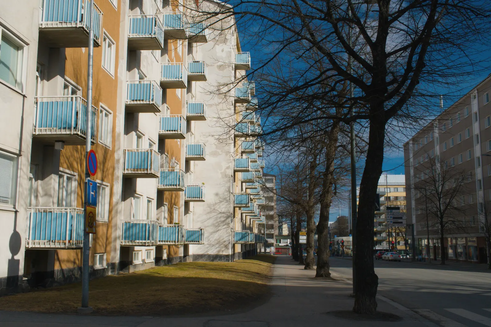
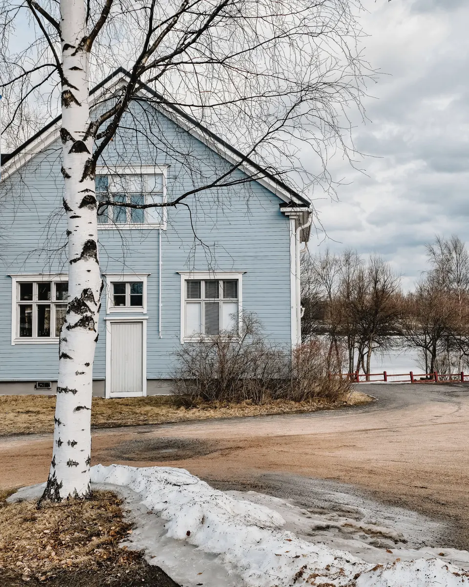
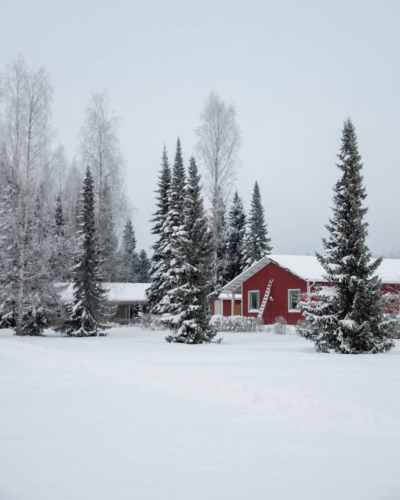
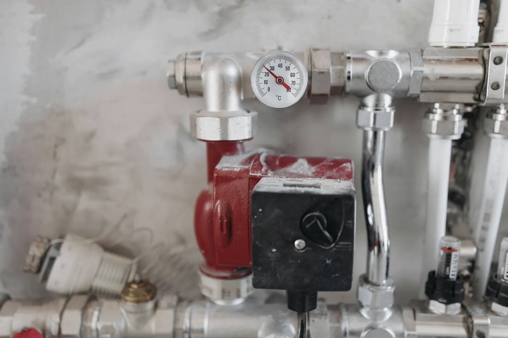
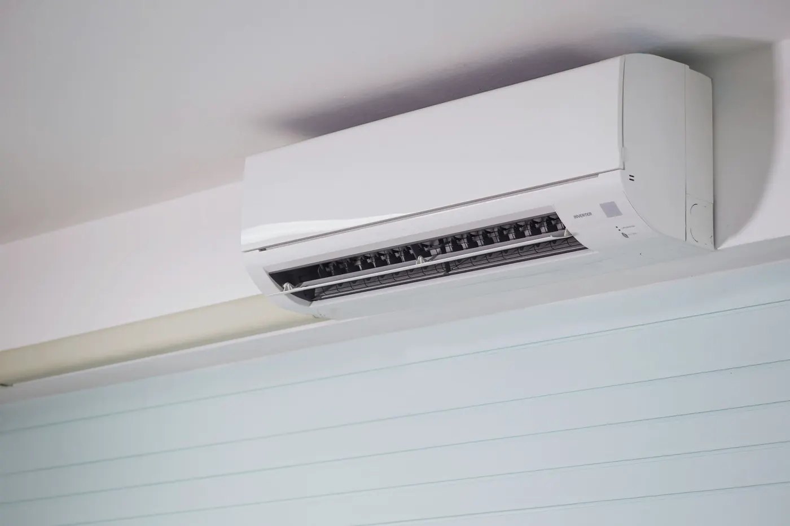
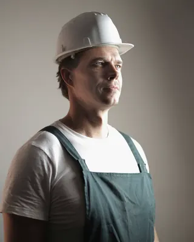

Hervanta · kerrostalo 1974
Hybridiputkiremontti, 48 asuntoa
- Hinta
- 640 € / asm²
- Kesto / rappu
- 8 viikkoa
- Vesikatkoja
- 6 päivää
- Lisätöitä
- 31 asuntoa
Tammikuun aamu Kangasalla: ulkona −24 °Csisällä 21 °C
Mitoitamme jokaisen lämpöpumpun Pirkanmaan pakkasille. Tavoite on yksi viiva: 21 astetta tammikuusta joulukuuhun.
Ulkolämpötila: Tampereen tyypillinen vuosi, kuukausien keskilämpötilat pyöristettyinä ja tammikuun pakkasjakso. Sisälämpötila: mitoituksemme tavoite.
21 °C myös −29 asteen pakkasella.
Tämä on lämpötakuumme. Mitoitamme pumpun Tampereen mitoituslämpötilaan −29 °C. Jos talo ei pysy lämpimänä ensimmäisenä talvena, korjaamme mitoituksen omalla kustannuksellamme. Asennukselle on viiden vuoden takuu ja laitteelle valmistajan takuu.
Paikkakunta, vuosi ja luvut. Lämmityskulut ennen ovat omistajien laskuista, nykyiset arvioita ensimmäisen talven kulutuksesta.



Kolme järjestelmää, hinnat asennettuna. Kerromme arviokäynnillä suoraan, mikä sinun taloosi kannattaa, myös jos vastaus on ”ei mikään vielä”.



| Järjestelmä | Asennettuna | Sopii | Asennus | Työn osuus |
|---|---|---|---|---|
| Ilma-vesilämpöpumppuYleisin valinta pirkanmaalaiseen öljytaloon. Nykyiset patterit tai lattialämmitys jäävät. | 12 900–16 900 € | öljyn ja sähkön tilalle | 2–3 päivää | noin 30 % |
| MaalämpöKallein hankkia, edullisin käyttää. Porakaivo vaatii toimenpideluvan, ja haemme sen puolestasi. | 19 800–27 500 € | isot talot, pitkä aikajänne | 3–5 päivää | noin 45 % |
| IlmalämpöpumppuNopein tapa pienentää sähkölaskua ja saada kesäksi viileämpää. | 2 300–3 400 € | suorasähkötalon lisälämmöksi | 1 päivä | noin 40 % |
Hinnat sisältävät alv:n 25,5 %, laitteen, asennuksen, sähkö- ja putkityöt, käyttöönoton ja öljysäiliön tyhjennyksen ja poiston, kun pumppu tulee öljyn tilalle. Hinnat päivitetty 1.10.2026. Kiinteän hinnan saat arviokäynnin jälkeen.
Hallitus päättää, mutta asukkaat elävät remontin keskellä. Siksi jokainen rappu saa rappukortin, jossa näkyy jokainen vesikatko ja jokainen päivä ilman omaa kylpyhuonetta.
| Menetelmä | €/asm² | Kesto | Asukkaalle | Käyttöikä |
|---|---|---|---|---|
| Perinteinen linjasaneerausKaikki putket ja kylpyhuoneet uusiksi | 850–1 050 € | 12–14 viikkoa | Asuminen ei onnistu | 50 vuotta |
| HybridiViemärit sukitetaan, vesijohdot ja kylpyhuoneet uusitaan | 550–750 € | 7–9 viikkoa | Kylpyhuone pois 5–6 viikkoa | 40–50 vuotta |
| SukitusViemärit sisäpuolelta, ei purkua | 160–260 € | 2–3 viikkoa / rappu | Vesikatko 5–8 päivää | 40–50 vuotta |
Hinnat ovat Pirkanmaan kohteistamme 2024–2026, sis. alv 25,5 %. Hankesuunnittelussa vertaamme menetelmät teidän talonne kuntotutkimuksen perusteella. Monessa talossa järkevin on yhdistelmä.
Rappukortti on rapun ilmoitustaululla ja asukkaiden puhelimessa. Päivitämme sen joka maanantai. Jos aikataulu muuttuu, asukkaat kuulevat sen ensin meiltä, eivät naapurilta.
”Perustin Lauhan vuonna 2008, koska halusin tehdä lämmityksiä, joihin voin itse luvata jotain. Lupaus on edelleen sama: tasainen lämpö ja siisti työmaa.”Jari Ojanperä, toimitusjohtaja ja lämpöpumppuasentaja

Omakotitalossa katsomme lämmitysjärjestelmän, mittaamme ja laskemme pumpun koon. Taloyhtiössä aloitamme kuntotutkimuksesta ja hankesuunnittelusta.